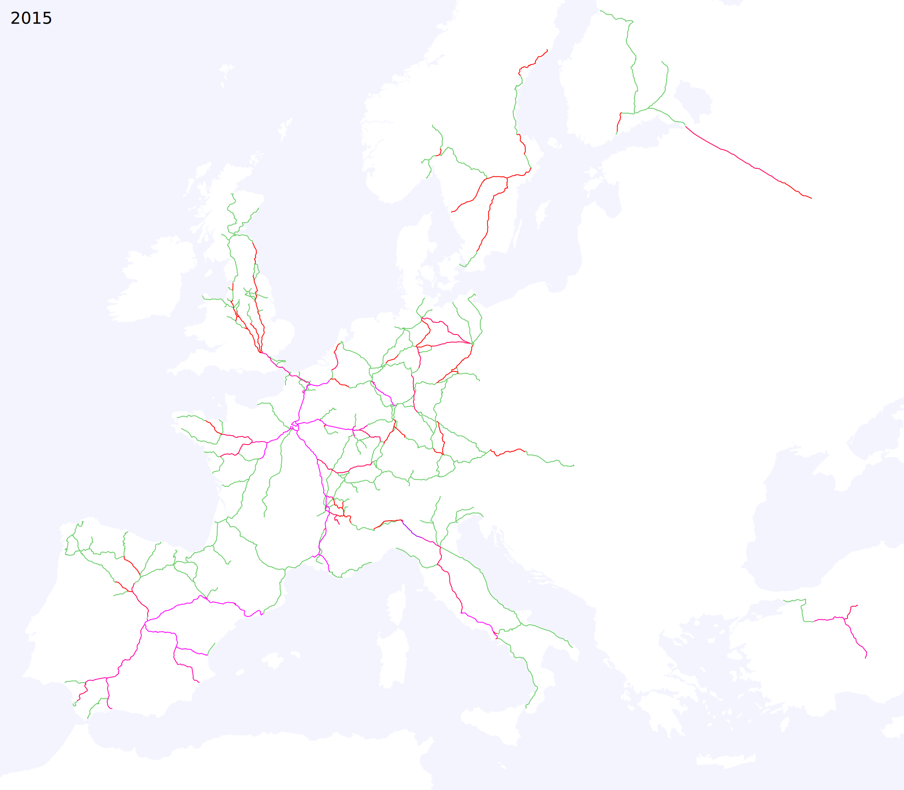
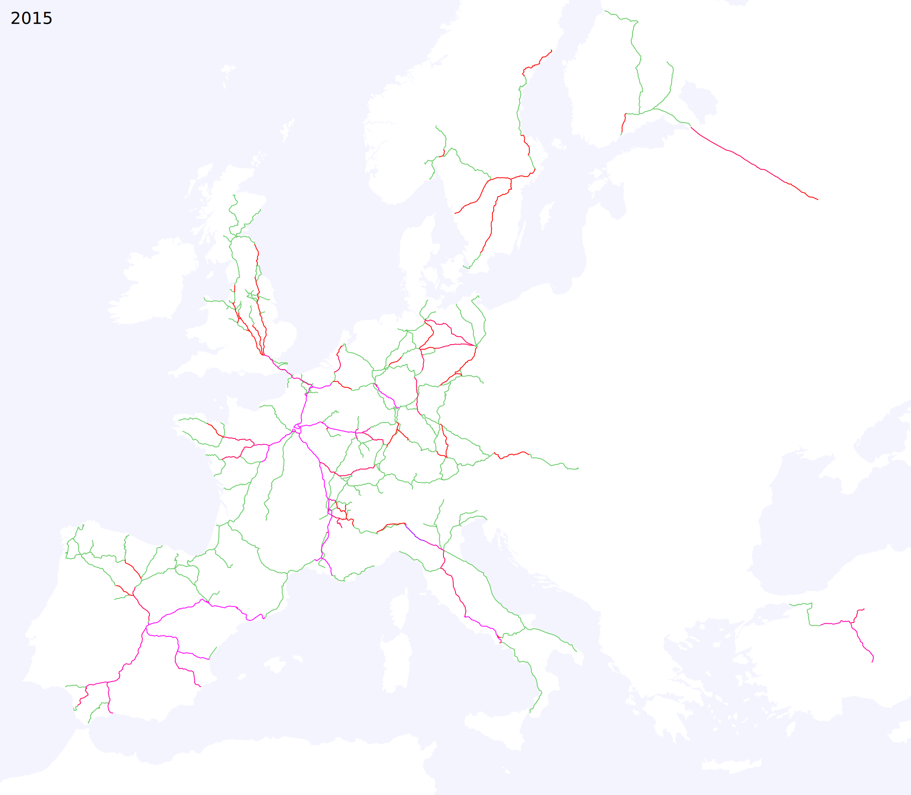
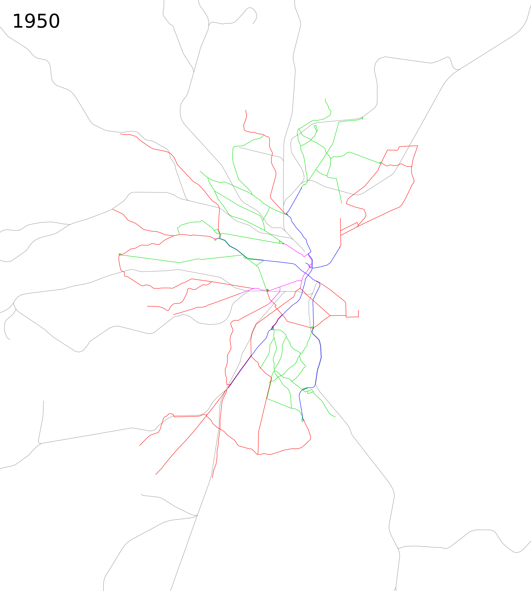
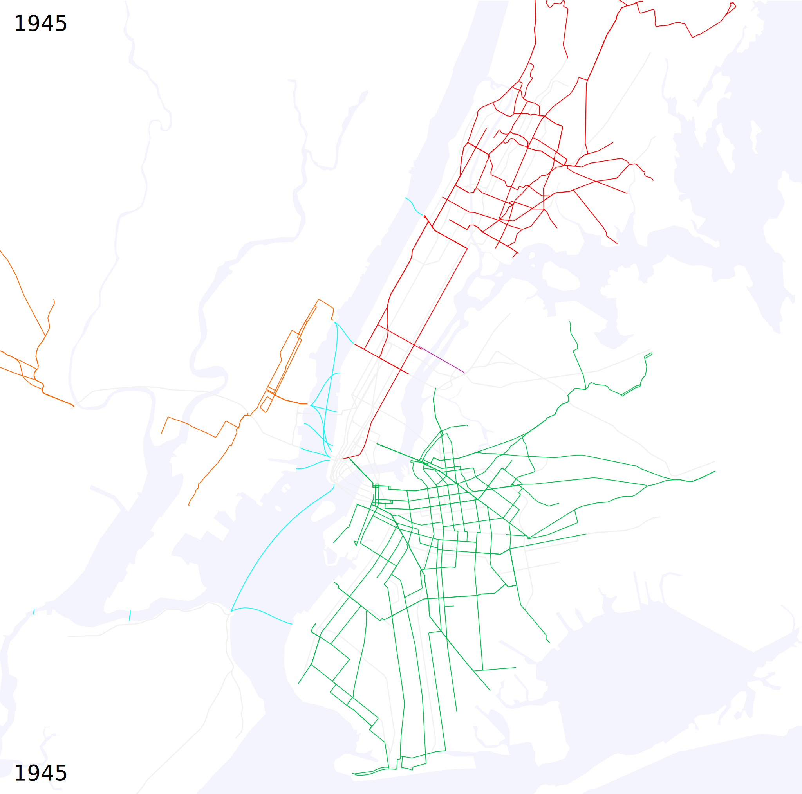
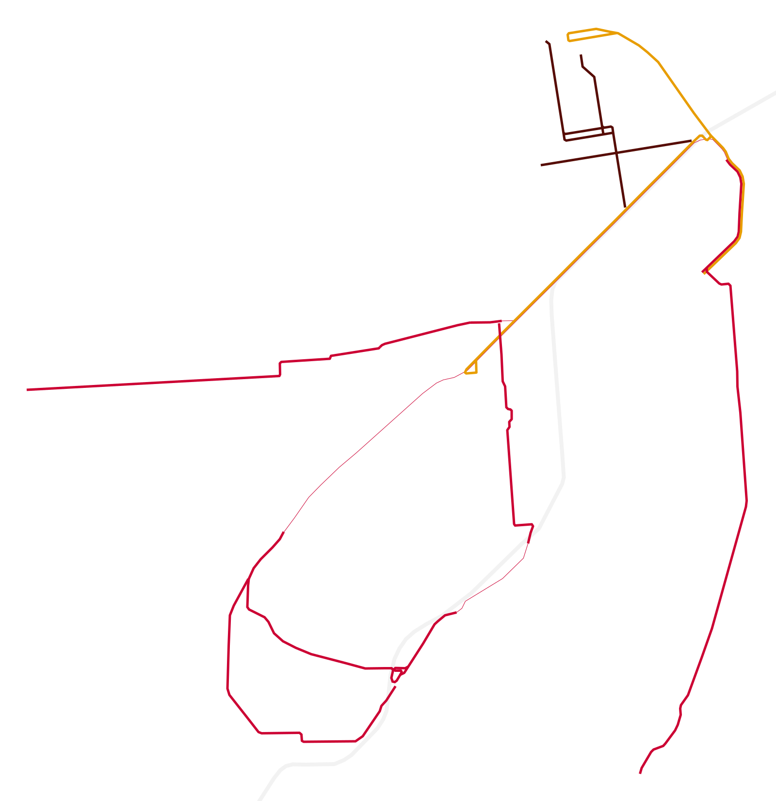
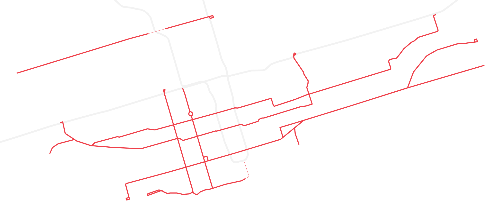
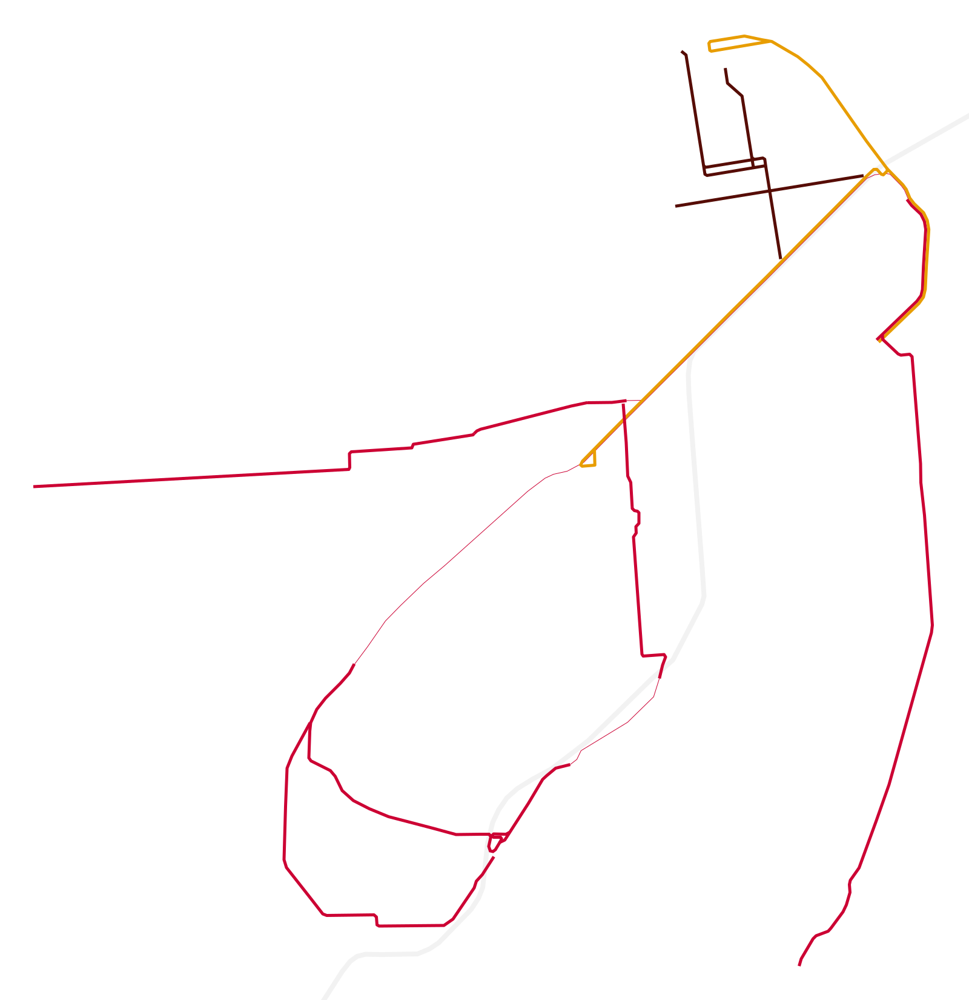
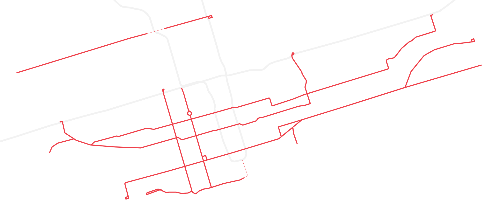
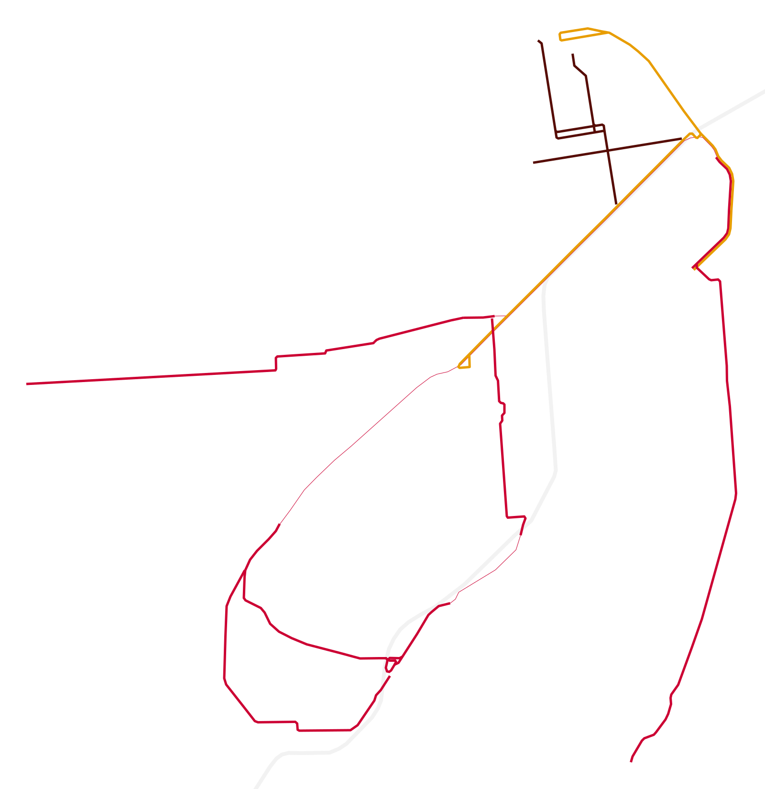
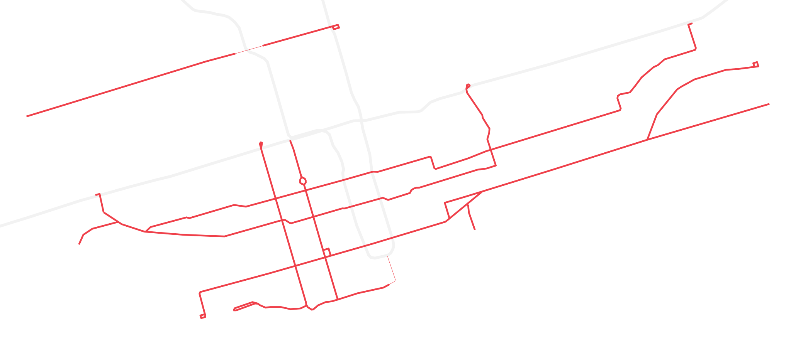

Miscellaneous (not strictly rapid transit) timelines:
High speed rail in Asia and Europe, 1965-2015 
Regional passenger rail timelines, 1835-2010:
Northeast US
California
 City rail and trolleybus timelines, 1840-2010:
City rail and trolleybus timelines, 1840-2010:Boston
 San Francisco

New York trolley abandonment,
1932-1957
 Hurricane Sandy rapid transit recovery,
October 2012-June 2013
 Nonstop flights from New York,
Nonstop flights from New York,1930-2010

Other maps:
Scale comparison of selected streetcar systems, 2018


 

Scale comparison of selected walled cities, 500 BCE-1800 CE


Scale comparison of selected walled cities, 500 BCE-1800 CE


 Google maps:
Google charts:
Google maps:
Google charts:
All passenger rail lines in OpenStreetMap


Scale comparison of selected walled cities, 500 BCE-1800 CE
Google maps:
Google charts:
All passenger rail lines in OpenStreetMap
Note: above maps not all at same scale.
See also: historical rapid transit timelines, 1840-2015
By Alexander Rapp based on map data
 by OpenStreetMap and Wikimedia contributors and historical sources.
by OpenStreetMap and Wikimedia contributors and historical sources.